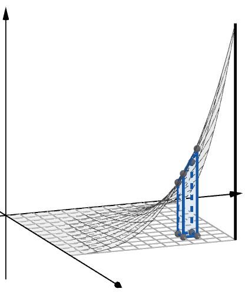

Riemann Sums for Functions of Two Variables
In Calculus I and II, we find the area of a two-dimensional region by partitioning it into rectangles. As the number of rectangles approaches infinity, the sum of their areas approaches the exact area.
In Calculus III, we extend this idea to three dimensions. We can find the volume of a solid under a surface by partitioning the region into small rectangular boxes. As the number of boxes increases toward infinity, the total of their volumes approaches the exact volume beneath the surface.
The graph of a surface \(z = f(x, y)\) is shown below. We are interested in the volume of the solid beneath this surface and above the \(xy\)-plane, over the region \(0 \le x \le a\) and \(0 \le y \le b\).

Divide \([0, a]\) into \(m\) subintervals of equal width, and divide \([0, b]\) into \(n\) subintervals of equal width.
This creates a grid of small rectangles in the \(xy\)-plane. An upper-right Riemann sum uses the upper-right corner \((i\,\Delta x,\ j\,\Delta y)\) of each rectangle to determine the height of each box. The volume of each box, from length times width times height, is below.
Summing the volumes of all these boxes gives an approximation of the total volume under the surface.
As \(m\) and \(n\) increase, the boxes fit the surface more closely. In the limit, the sum approaches the exact volume.
Volume as a Limit of a Riemann Sum
You will need the following formulas from Calculus I.
Sum Formulas
An Example
Consider the volume of the solid between the surface \(f(x, y) = x^2 y^3\) and the \(xy\)-plane, over the region \(0 \le x \le 8\) and \(0 \le y \le 4\).

- Find the upper-right approximation for this volume. Express your answer in terms of \(m\) and \(n\).
- Evaluate your formula for \(m = 4000\) and \(n = 5000\).
- How many rectangular boxes are used in the approximation in part (b)?
- Find the limit of your formula from part (a) as both \(m\) and \(n\) approach infinity.
Part (a): Here \(\Delta x = \frac{8}{m}\) and \(\Delta y = \frac{4}{n}\), and \(f(i\,\Delta x,\ j\,\Delta y) = (i\,\Delta x)^2 (j\,\Delta y)^3\). The factors with \(i\) and the factors with \(j\) separate into two sums.
The last step divides \(\frac{512}{m^3}\) into the first sum and \(\frac{256}{n^4}\) into the second, since \(8^3 \cdot 4^4 = 512 \cdot 256 = 131072\).
Part (b): Substituting \(m = 4000\) and \(n = 5000\) gives approximately \(10931.13\).
Part (c): There are \(m \cdot n = 4000 \cdot 5000 = 20{,}000{,}000\) rectangular boxes.
Part (d): As \(m\) and \(n\) approach infinity, the terms with \(m\) and \(n\) in the denominator approach zero.